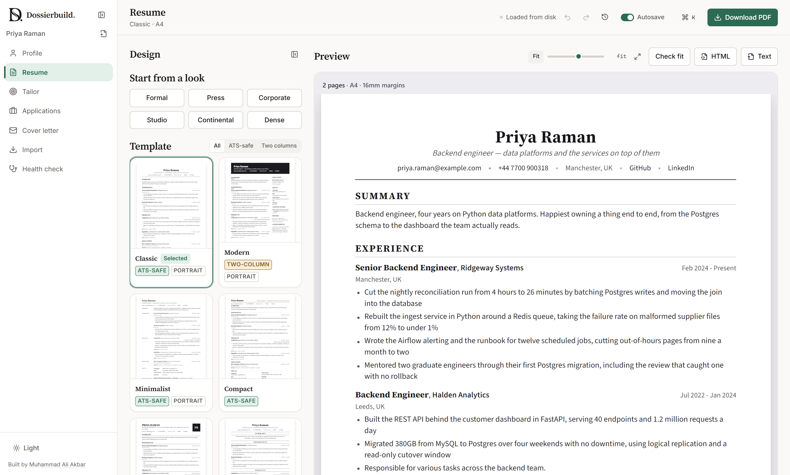
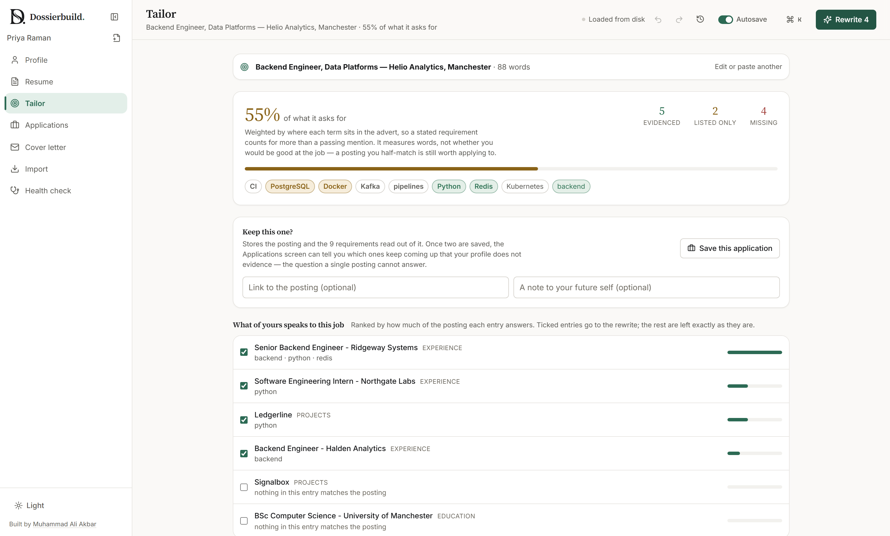
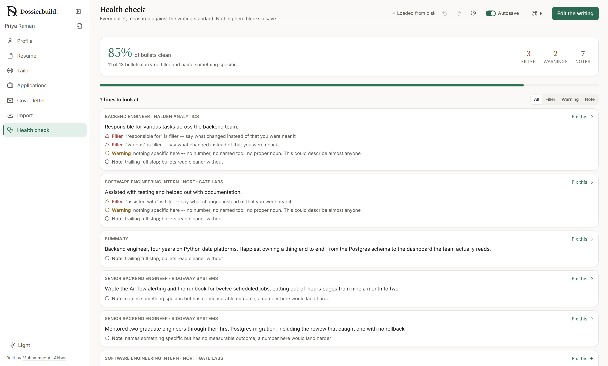

One true profile. A tailored resume for every job.
Dossierbuild keeps a single master record of everything you have done, re-angles it at each job you apply for, and prints it to a real PDF. Every AI rewrite is checked against your own history, so it can sharpen a line but never invent a fact.

Why it is different
Most resume tools hand your history and the job advert to a model together and print whatever comes back. Dossierbuild deliberately does not.
The job is read by rules
A posting is parsed into weighted requirements by a deterministic engine and scored against your profile. The gap analysis is testable, repeatable, and works with no API key at all.
Rewrites cannot add facts
Every AI suggestion is diffed against the line it came from. A number, tool or employer that is not already in your profile is flagged, and flagged suggestions arrive unticked.
The writing standard is code
A built-in linter catches filler and vague claims, and the same linter judges the model's output. A rewrite that trades one cliché for another shows up as a score that did not move.
Tailor to the posting, honestly
Paste a job advert. Dossierbuild reads it into the requirements that matter, shows which ones your profile already evidences, and only then asks a model to re-angle your bullets toward the gaps.
Each application is filed with the exact version you sent.

Review the whole document
A job that ends before it starts, a resume with no email on it, the same bullet pasted twice. Review reads the entire document and points to the one line worth fixing first.

Everything a job search needs
Your history stays yours
Dossierbuild runs on your own machine. Your profile, portrait, saved versions and API key never leave it. The only thing that goes out is the text you explicitly send to a model.